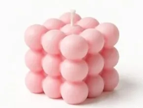
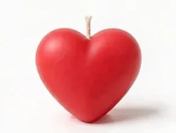
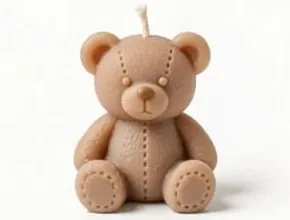
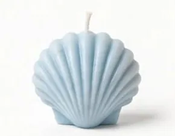
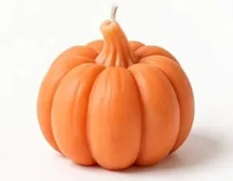
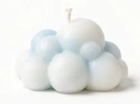
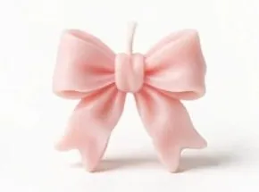
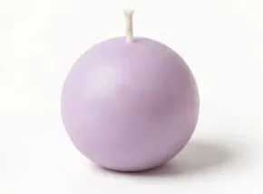
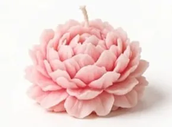
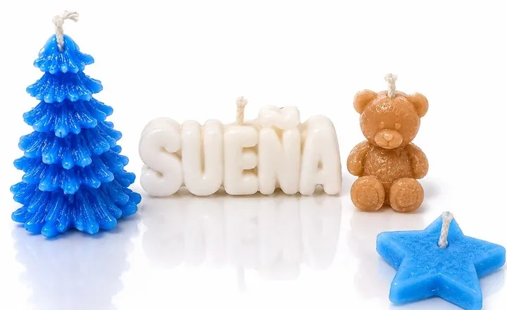

Figuras
Cubo de burbujas
Rosa
Figuras decorativas hechas a mano, ideales para regalar

Rosa
Rojo

Rojo brillante

Café beige
Amarillo
Rosa con glaseado blanco
Rosa con betún rosa
Verde

Azul claro

Naranja
Verde con estrella amarilla

Blanco y azul claro

Rosa

Morado claro

Rosa

Kit de velas navideñas: árbol, letrero «Sueña», osito y estrella.